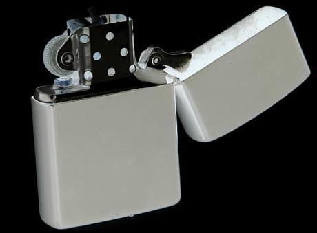
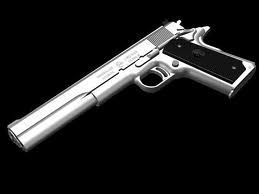
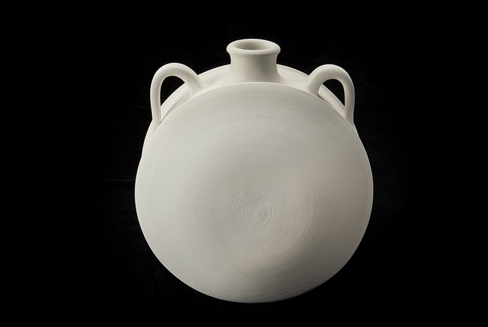

Los sonidos paran, así que decides avanzar... Probablemente el haberte agazapado cual cobarde es lo que te ha llevado a sobrevivir, pero espera, ¡aún hay más! En el camino encuentras un pequeño hatillo con tres objetos, indispensables, sin duda, aunque sólo puedes llevar uno, así que elige bien...
(Si no has entendido el concepto de juego INTERACTIVO, haz click en la imagen para seleccionar el objeto que te salvará la vida)
  Instintivamente coges el arma, compruebas si el arma está cargada, y sí, lo está... De repente escuchas otra vez ese susurro desgarrador y algo se mueve ferozmente a tus espaldas... ¿Piensas dejarlo vivir? De un salto te colocas frente a la extraña silueta y aprietas el gatillo, pero ¡oh! se ha encasquillado, ¡qué lástima! No, en serio, el arma no era la mejor opción, tus entrañas lo saben, ese "algo" que te ha matado lo sabe, todos menos tú saben que no deberías haber escogido la pistola...
Te entra sed y decides beber un poco, pero tu prisa te hace toser, cosa mala cuando tu vida depende de la estabilidad de una antorcha débilmente sujeta en tu mano... La fuente de luz cae y se apaga, condenandote al dolor, conviriéndote en la comida de "algo" más fuerte y ágil que tú.